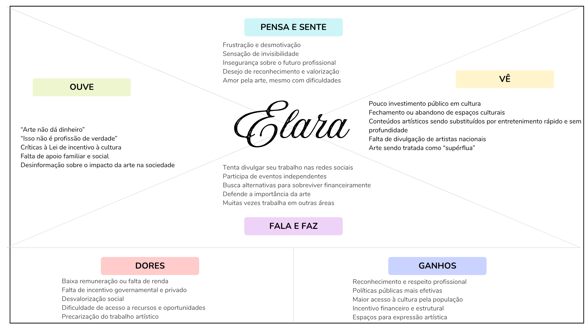

Resumo do projeto
Este projeto tem como objetivo analisar a desvalorização da arte na sociedade contemporânea, identificando suas causas, impactos e criar uma solução inteligente por meio de pesquisa e investigação.
A investigação aborda a desvalorização da arte no Brasil e seus efeitos sobre os jovens. Apesar de sua importância cultural e social, a arte é frequentemente vista como algo secundário. Isso também se reflete na escola, onde a disciplina de Arte recebe pouca relevância. Como consequência, jovens artistas enfrentam desmotivação e insegurança. A falta de reconhecimento gera opressão de ideias e limita a expressão criativa. Um relato evidencia o sentimento de desvalorização e instabilidade diante do sonho artístico. A ausência de apoio social contribui para o enfraquecimento da identidade cultural.
Resposta resumida...
Resposta resumida...
Resposta resumida...
